CODING AGENTS AS PIXEL WORLD MODELS
traex/DeepSeek-V4.1-Flash · 0155
点击播放 · 原生 RGB 像素
逐轮保存的候选
回放视频、检查图与代码变化。
每份候选均可单独播放。实际图片检查记录在下方工具轨迹中。
候选 01播放与检查图
点击播放 · 原生 RGB 像素

展开代码变化
--- 上一保存版本
+++ 本次保存版本
@@ -0,0 +1,193 @@
+from pathlib import Path
+
+import cv2
+import numpy as np
+from PIL import Image
+
+import artifact_io
+
+
+ROOT = Path(__file__).resolve().parent
+WIDTH, HEIGHT = 256, 144
+N_FRAMES = 20
+FPS = 4
+
+BALL_START = np.array([150.7, 136.4], dtype=np.float64)
+BALL_CONTACT = np.array([153.9, 78.0], dtype=np.float64)
+CONTACT_TIME = 2.25
+
+
+def make_clean_plate(first_frame):
+ """Remove the foreground tennis ball while retaining the original table grain."""
+ yy, xx = np.indices((HEIGHT, WIDTH))
+ mask = np.zeros((HEIGHT, WIDTH), dtype=np.uint8)
+ ellipse = ((xx - 151.0) / 22.0) ** 2 + ((yy - 146.0) / 25.0) ** 2 <= 1.0
+ mask[ellipse] = 255
+ plate = cv2.inpaint(first_frame[:, :, ::-1], mask, 7, cv2.INPAINT_NS)
+ plate = cv2.cvtColor(plate, cv2.COLOR_BGR2RGB)
+
+ # Preserve the source image away from the small repaired area.
+ repaired = mask > 0
+ plate[~repaired] = first_frame[~repaired]
+ return plate
+
+
+def ball_state(frame_index):
+ t = frame_index / FPS
+ if t <= CONTACT_TIME:
+ u = t / CONTACT_TIME
+ y = BALL_START[1] + (BALL_CONTACT[1] - BALL_START[1]) * (u * u)
+ x = BALL_START[0] + (BALL_CONTACT[0] - BALL_START[0]) * (u * u)
+ travel = np.hypot(x - BALL_START[0], y - BALL_START[1])
+ else:
+ dt = t - CONTACT_TIME
+ # A light rebound from a very massive kettlebell: most speed is lost.
+ rebound = 16.0 * dt - 2.4 * dt * dt
+ y = BALL_CONTACT[1] + rebound
+ x = BALL_CONTACT[0] + 0.26 * dt
+ travel = np.hypot(BALL_CONTACT[0] - BALL_START[0],
+ BALL_CONTACT[1] - BALL_START[1])
+ travel -= rebound
+
+ radius = 12.0 + 2.0 * (y - BALL_CONTACT[1]) / (
+ BALL_START[1] - BALL_CONTACT[1]
+ )
+ radius = float(np.clip(radius, 11.8, 14.2))
+ roll = -travel / 12.8
+ return float(x), float(y), radius, float(roll)
+
+
+def add_contact_shadow(frame, cx, cy, radius):
+ x0 = max(0, int(np.floor(cx - radius * 1.35)))
+ x1 = min(WIDTH, int(np.ceil(cx + radius * 1.35)) + 1)
+ y0 = max(0, int(np.floor(cy + radius * 0.55)))
+ y1 = min(HEIGHT, int(np.ceil(cy + radius * 1.30)) + 1)
+ if x0 >= x1 or y0 >= y1:
+ return
+
+ yy, xx = np.indices((y1 - y0, x1 - x0), dtype=np.float64)
+ xx += x0
+ yy += y0
+ sx = cx + 0.4
+ sy = cy + radius * 0.94
+ rx = radius * 0.94
+ ry = radius * 0.29
+ distance = ((xx - sx) / rx) ** 2 + ((yy - sy) / ry) ** 2
+ weight = np.exp(-1.7 * distance) * 0.22
+ weight[distance > 2.7] = 0.0
+ shadow_tint = np.array([68.0, 55.0, 35.0])
+ region = frame[y0:y1, x0:x1].astype(np.float64)
+ frame[y0:y1, x0:x1] = np.clip(
+ region * (1.0 - weight[:, :, None])
+ + shadow_tint[None, None, :] * weight[:, :, None],
+ 0,
+ 255,
+ ).astype(np.uint8)
+
+
+def render_ball(frame, cx, cy, radius, roll):
+ """Render a small fuzzy tennis ball with fixed lighting and rolling seams."""
+ ss = 5
+ pad = 3
+ left = int(np.floor(cx - radius - pad))
+ top = int(np.floor(cy - radius - pad))
+ right = int(np.ceil(cx + radius + pad))
+ bottom = int(np.ceil(cy + radius + pad))
+ lx0, ly0 = max(0, left), max(0, top)
+ lx1, ly1 = min(WIDTH, right), min(HEIGHT, bottom)
+ if lx0 >= lx1 or ly0 >= ly1:
+ return
+
+ width = (right - left) * ss
+ height = (bottom - top) * ss
+ xs = left + (np.arange(width, dtype=np.float64) + 0.5) / ss
+ ys = top + (np.arange(height, dtype=np.float64) + 0.5) / ss
+ xx, yy = np.meshgrid(xs, ys)
+ u = (xx - cx) / radius
+ v = (yy - cy) / radius
+ r2 = u * u + v * v
+ inside = r2 <= 1.0
+ z = np.sqrt(np.maximum(0.0, 1.0 - r2))
+
+ ca, sa = np.cos(roll), np.sin(roll)
+ tu = ca * u + sa * v
+ tv = -sa * u + ca * v
+
+ # Two great-circle seams, rotated as a single spherical texture.
+ p = np.stack((tu, tv, z), axis=-1)
+ n1 = np.array([0.78, 0.48, 0.31])
+ n2 = np.array([-0.61, 0.73, -0.27])
+ n1 /= np.linalg.norm(n1)
+ n2 /= np.linalg.norm(n2)
+ seam1 = np.abs(p @ n1)
+ seam2 = np.abs(p @ n2)
+ seam_distance = np.minimum(seam1, seam2)
+ seam = np.clip((0.055 - seam_distance) / 0.030, 0.0, 1.0)
+
+ # Fine deterministic nap, plus a slower mottled variation.
+ nap = (
+ np.sin(47.0 * tu + 19.0 * tv + 1.3)
+ + np.sin(31.0 * tv - 23.0 * tu + 0.2)
+ + np.sin(73.0 * (tu + tv) + 2.1)
+ ) / 3.0
+ mottle = 0.5 + 0.5 * np.sin(10.5 * tu - 7.0 * tv + 0.8)
+ nap = 0.035 * nap + 0.025 * (mottle - 0.5)
+
+ # Camera-fixed illumination from the upper right.
+ light = np.array([0.39, -0.55, 0.74])
+ light /= np.linalg.norm(light)
+ normal = np.stack((u, v, z), axis=-1)
+ diffuse = np.clip(normal @ light, 0.0, 1.0)
+ brightness = 0.57 + 0.51 * diffuse + 0.09 * np.power(z, 0.45) + nap
+ brightness *= 0.90 + 0.10 * z
+
+ base = np.array([153.0, 195.0, 47.0])
+ seam_color = np.array([103.0, 122.0, 34.0])
+ albedo = base[None, None, :] * (1.0 - 0.52 * seam[:, :, None])
+ albedo += seam_color[None, None, :] * (0.52 * seam[:, :, None])
+ rgb = albedo * brightness[:, :, None]
+
+ # A faint fuzzy rim and a small, soft highlight.
+ specular = np.exp((diffuse - 1.0) * 24.0)
+ rgb += specular[:, :, None] * np.array([15.0, 18.0, 8.0])[None, None, :]
+ edge = np.clip((1.0 - r2) * radius * 0.78, 0.0, 1.0)
+ alpha = edge * inside
+
+ rgb = rgb.reshape(height // ss, ss, width // ss, ss, 3).mean(axis=(1, 3))
+ alpha = alpha.reshape(height // ss, ss, width // ss, ss).mean(axis=(1, 3))
+
+ dest_x0 = lx0 - left
+ dest_y0 = ly0 - top
+ dest_x1 = dest_x0 + (lx1 - lx0)
+ dest_y1 = dest_y0 + (ly1 - ly0)
+ rgb = rgb[dest_y0:dest_y1, dest_x0:dest_x1]
+ alpha = alpha[dest_y0:dest_y1, dest_x0:dest_x1, None]
+ region = frame[ly0:ly1, lx0:lx1].astype(np.float64)
+ frame[ly0:ly1, lx0:lx1] = np.clip(
+ region * (1.0 - alpha) + rgb * alpha, 0, 255
+ ).astype(np.uint8)
+
+
+def main():
+ first_frame = np.asarray(Image.open(ROOT / "first_frame.png").convert("RGB"))
+ plate = make_clean_plate(first_frame)
+ frames = []
+
+ for index in range(N_FRAMES):
+ if index == 0:
+ frames.append(first_frame.copy())
+ continue
+ frame = plate.copy()
+ cx, cy, radius, roll = ball_state(index)
+ add_contact_shadow(frame, cx, cy, radius)
+ render_ball(frame, cx, cy, radius, roll)
+ frames.append(frame)
+
+ frames = np.stack(frames).astype(np.uint8)
+ assert frames.shape == (N_FRAMES, HEIGHT, WIDTH, 3)
+ assert np.array_equal(frames[0], first_frame)
+ artifact_io.save(frames, ROOT)
+
+
+if __name__ == "__main__":
+ main()
候选 02播放与检查图
点击播放 · 原生 RGB 像素
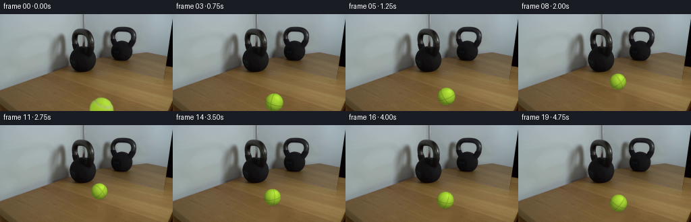
展开代码变化
--- 上一保存版本
+++ 本次保存版本
@@ -13,7 +13,7 @@
FPS = 4
BALL_START = np.array([150.7, 136.4], dtype=np.float64)
-BALL_CONTACT = np.array([153.9, 78.0], dtype=np.float64)
+BALL_CONTACT = np.array([146.8, 91.0], dtype=np.float64)
CONTACT_TIME = 2.25
@@ -44,7 +44,7 @@
# A light rebound from a very massive kettlebell: most speed is lost.
rebound = 16.0 * dt - 2.4 * dt * dt
y = BALL_CONTACT[1] + rebound
- x = BALL_CONTACT[0] + 0.26 * dt
+ x = BALL_CONTACT[0] + 0.72 * dt
travel = np.hypot(BALL_CONTACT[0] - BALL_START[0],
BALL_CONTACT[1] - BALL_START[1])
travel -= rebound
@@ -188,6 +188,16 @@
assert np.array_equal(frames[0], first_frame)
artifact_io.save(frames, ROOT)
+ video = cv2.VideoWriter(
+ str(ROOT / "output.mp4"),
+ cv2.VideoWriter_fourcc(*"mp4v"),
+ FPS,
+ (WIDTH, HEIGHT),
+ )
+ for frame in frames:
+ video.write(cv2.cvtColor(frame, cv2.COLOR_RGB2BGR))
+ video.release()
+
if __name__ == "__main__":
main()
候选 03播放与检查图
点击播放 · 原生 RGB 像素

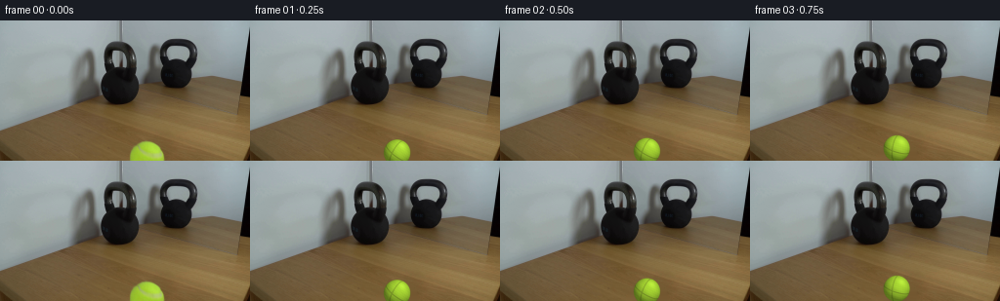
展开代码变化
--- 上一保存版本
+++ 本次保存版本
@@ -189,8 +189,8 @@
artifact_io.save(frames, ROOT)
video = cv2.VideoWriter(
- str(ROOT / "output.mp4"),
- cv2.VideoWriter_fourcc(*"mp4v"),
+ str(ROOT / "output.mkv"),
+ cv2.VideoWriter_fourcc(*"FFV1"),
FPS,
(WIDTH, HEIGHT),
)
候选 04播放与检查图
点击播放 · 原生 RGB 像素

展开代码变化
--- 上一保存版本
+++ 本次保存版本
@@ -1,5 +1,6 @@
from pathlib import Path
+import av
import cv2
import numpy as np
from PIL import Image
@@ -198,6 +199,20 @@
video.write(cv2.cvtColor(frame, cv2.COLOR_RGB2BGR))
video.release()
+ container = av.open(str(ROOT / "output.mp4"), mode="w")
+ stream = container.add_stream("libx264", rate=FPS)
+ stream.width = WIDTH
+ stream.height = HEIGHT
+ stream.pix_fmt = "yuv420p"
+ stream.options = {"crf": "10", "preset": "medium"}
+ for frame in frames:
+ video_frame = av.VideoFrame.from_ndarray(frame, format="rgb24")
+ for packet in stream.encode(video_frame):
+ container.mux(packet)
+ for packet in stream.encode():
+ container.mux(packet)
+ container.close()
+
if __name__ == "__main__":
main()
可观测工具轨迹
实际执行的命令与返回图片。
命令 1exit 0
/bin/bash -c "pwd && rg --files -g '"'!*.mp4'"' -g '"'!*.mov'"' | sort | head -200"
命令 2exit 0
/bin/bash -c "sed -n '1,240p' prompt.txt"
命令 3exit 0
/bin/bash -c "sed -n '1,280p' GENERATION_RULES.md"
命令 4exit 0
/bin/bash -c "ls -la && find . -maxdepth 2 -type f -printf '%p %s bytes\\n' | sort"
命令 5exit 0
/bin/bash -c "sed -n '1,260p' artifact_io.py"
命令 6exit 0
/bin/bash -c "python - <<'PY'
from PIL import Image
im=Image.open('first_frame.png')
print(im.size, im.mode)
for name, box in [('ball',(115,115,190,144)),('kettle',(80,25,160,115)),('mirror',(145,25,230,120)),('table',(0,80,256,144))]:
im.crop(box).resize(((box[2]-box[0])*6,(box[3]-box[1])*6), Image.Resampling.NEAREST).save('.tmp/'+name+'.png')
PY"命令 7exit 0
/bin/bash -c "python - <<'PY'
from PIL import Image
import numpy as np
im=np.asarray(Image.open('first_frame.png'))
# print representative pixel rows around ball and table edge
for y in [110,115,120,125,130,135,140,143]:
print('y',y, [(x,tuple(im[y,x])) for x in [120,125,128,130,132,134,136,140,145,150,155,160,165,170,175,180]])
PY"命令 8exit 0
/bin/bash -c "python - <<'PY' mods=['cv2','scipy','numpy','PIL','imageio','av','moviepy'] for m in mods: try: x=__import__(m); print(m,'OK',getattr(x,'__version__','')) except Exception as e: print(m,'NO',e) PY ffmpeg -version | head -1"
命令 9exit 0
/bin/bash -c "python - <<'PY'
import cv2, numpy as np
from PIL import Image
im=cv2.imread('first_frame.png')
rgb=im[:,:,::-1]
hsv=cv2.cvtColor(im,cv2.COLOR_BGR2HSV)
mask=np.zeros(im.shape[:2],np.uint8)
# green/yellow ball within lower region
roi=(np.indices(mask.shape)[0]>117)
g=(rgb[:,:,1].astype(int)>rgb[:,:,0].astype(int)+15)&(rgb[:,:,1].astype(int)>rgb[:,:,2].astype(int)+35)&roi
mask[g]=255
mask=cv2.dilate(mask,np.ones((5,5),np.uint8),iterations=2)
print(mask.sum()/255)
for rad in [2,3,5,7]:
out=cv2.inpaint(im,mask,rad,cv2.INPAINT_TELEA)
cv2.imwrite(f'.tmp/plate_telea{rad}.png',out)
for rad in [2,3,5,7]:
out=cv2.inpaint(im,mask,rad,cv2.INPAINT_NS)
cv2.imwrite(f'.tmp/plate_ns{rad}.png',out)
PY"命令 10exit 0
/bin/bash -c "python - <<'PY'
from PIL import Image
import numpy as np
im=np.asarray(Image.open('first_frame.png'))
r,g,b=im[:,:,0].astype(int),im[:,:,1].astype(int),im[:,:,2].astype(int)
m=(g>r+15)&(g>b+35)
y,x=np.where(m)
print(len(x),x.min(),x.max(),y.min(),y.max(),x.mean(),y.mean())
# fit circle to edge via estimate from mask area and width?
PY"命令 11exit 0
/bin/bash -c "python - <<'PY'
from PIL import Image
im=Image.open('first_frame.png')
# crop larger around kettle, nearest and bicubic
for name,box in [('scene',(0,0,256,144)),('kettle_big',(90,40,165,120)),('ball_big',(115,108,190,144))]:
c=im.crop(box)
c.resize((c.width*4,c.height*4), Image.Resampling.LANCZOS).save('.tmp/'+name+'_lanczos.png')
PY"命令 12exit 0
/bin/bash -c "python - <<'PY'
from PIL import Image
import numpy as np
im=np.asarray(Image.open('first_frame.png')).astype(float)
for y in range(118,144):
row=im[y]
# table noise around 120
print(y, np.round(np.mean(row[118:130],axis=0),1), np.round(np.mean(row[172:190],axis=0),1))
PY"命令 13exit 0
/bin/bash -c "python - <<'PY'
import cv2, numpy as np
im=cv2.imread('first_frame.png')
# reconstruct ball via cv2 inpainting as base plate
rgb=im[:,:,::-1]
mask=np.zeros(im.shape[:2],np.uint8)
y,x=np.indices(mask.shape)
mask[(y>117)&(rgb[:,:,1].astype(int)>rgb[:,:,0].astype(int)+15)&(rgb[:,:,1].astype(int)>rgb[:,:,2].astype(int)+35)]=255
mask=cv2.dilate(mask,np.ones((5,5),np.uint8),iterations=2)
# add circle-ish area likely hidden by ball
cv2.circle(mask,(151,145),20,255,-1)
plate=cv2.inpaint(im,mask,7,cv2.INPAINT_TELEA)
cv2.imwrite('.tmp/plate_full.png',plate)
PY"命令 14exit 0
/bin/bash -c "python - <<'PY'
from PIL import Image
import numpy as np
im=np.asarray(Image.open('first_frame.png')).astype(int)
# print kettle silhouette horizontal extents at rows
for y in [60,65,70,75,80,85,90,95,100,105,108,110]:
m=(im[y,:,0]<100)&(im[y,:,1]<100)&(im[y,:,2]<100)
xs=np.where(m)[0]
print(y, xs.min() if len(xs) else None, xs.max() if len(xs) else None, len(xs))
PY"命令 15exit 0
/bin/bash -c "python - <<'PY'
from PIL import Image
import numpy as np
im=np.asarray(Image.open('first_frame.png')).astype(int)
# rough dark mask x<170 (avoid mirror)
for y in range(45,115):
m=(im[y,:,0]<105)&(im[y,:,1]<105)&(im[y,:,2]<105)
xs=np.where(m[:170])[0]
if len(xs)>10:
print(y,xs.min(),xs.max(),len(xs))
PY"命令 16exit 0
/bin/bash -c "python - <<'PY'
import cv2, numpy as np
from PIL import Image
im=cv2.imread('first_frame.png')
# color segmentation for dark foreground kettle only, ignoring mirror by polygon x<170
rgb=im[:,:,::-1].astype(float)
y,x=np.indices(im.shape[:2])
mask=((rgb.max(2)<125)&(x<165)&(y>35)&(y<115)).astype(np.uint8)*255
# contour mask; only main component
n,labels,stats,cent=cv2.connectedComponentsWithStats(mask)
print(stats)
for i in range(1,n):
if stats[i,4]>500:
m=(labels==i).astype(np.uint8)*255
cv2.imwrite(f'.tmp/kettle_mask{i}.png',m)
# save overlay
cv2.imwrite(f'.tmp/kettle_mask{i}_rgb.png',cv2.cvtColor(m,cv2.COLOR_GRAY2BGR))
PY"命令 17exit 0
/bin/bash -c "python - <<'PY'
from PIL import Image
import numpy as np
im=np.asarray(Image.open('first_frame.png')).astype(int)
for y in range(35,110):
row=im[y]
# find dark-ish connected area x<160
m=(row[:160].max(1)<145)
# runs
d=np.diff(np.r_[False,m,False].astype(int)); starts=np.where(d==1)[0]; ends=np.where(d==-1)[0]
runs=[(a,b) for a,b in zip(starts,ends) if b-a>=2]
if y%3==0: print(y,runs)
PY"命令 18exit 0
/bin/bash -c "python - <<'PY'
import cv2, numpy as np
from PIL import Image
im=cv2.imread('first_frame.png')
hsv=cv2.cvtColor(im,cv2.COLOR_BGR2HSV)
rgb=im[:,:,::-1].astype(int)
# hand-seeded flood-ish regions using bg difference: foreground kettle approx ROI x65-142 y35-110
# dark-ish black material, but mirror region x>143 is separate. use Canny plus threshold and inspect
roi=rgb[30:115,60:145]
# mask high chroma? black is low saturation maybe
g=cv2.cvtColor(im,cv2.COLOR_BGR2GRAY)
for t in [50,70,90,110,130,150]:
m=((g<t)&(np.indices(g.shape)[1]<145)&(np.indices(g.shape)[0]>30)).astype(np.uint8)*255
# largest component only
n,l,s,c=cv2.connectedComponentsWithStats(m)
if n>1:
i=1+np.argmax(s[1:,4])
mm=((l==i)*255).astype(np.uint8)
print(t,s[i])
cv2.imwrite(f'.tmp/gmask{t}.png',mm)
PY"命令 19exit 0
/bin/bash -c "python - <<'PY'
from PIL import Image
import numpy as np
im=np.asarray(Image.open('first_frame.png'))
# compare exact rows to detect table grain. inspect image metadata
print(Image.open('first_frame.png').info)
# use Sobel?
PY"命令 20exit 0
/bin/bash -c "python - <<'PY'
from PIL import Image
im=Image.open('first_frame.png')
im.crop((90,100,220,144)).resize((780,264), Image.Resampling.NEAREST).save('.tmp/table_ball_nearest.png')
PY"命令 21exit 0
/bin/bash -c "python - <<'PY'
from PIL import Image
import numpy as np
im=np.asarray(Image.open('first_frame.png'))
# ball sample along grid
for y in [124,126,128,130,132,134,136,138,140,142,143]:
print('y',y,[(x,tuple(int(v) for v in im[y,x])) for x in range(134,169,4)])
PY"命令 22exit 0
/bin/bash -c "python - <<'PY'
from PIL import Image
import numpy as np
im=np.asarray(Image.open('first_frame.png'))
# manually print ASCII classification of dark objects in top half
for y in range(25,115,2):
s=''
for x in range(55,235,2):
r,g,b=im[y,x]
if max(r,g,b)<55: c='#'
elif max(r,g,b)<85: c='@'
elif max(r,g,b)<120: c='O'
elif max(r,g,b)<155: c='o'
elif max(r,g,b)<195: c='.'
else: c=' '
s+=c
print(f'{y:3d} {s}')
PY"命令 23exit 0
/bin/bash -c "python - <<'PY'
from PIL import Image
im=Image.open('first_frame.png')
# show only ball enlarged high-quality
im.crop((125,118,176,144)).resize((510,260), Image.Resampling.LANCZOS).save('.tmp/ball_only.png')
PY"命令 24exit 0
/bin/bash -c "python - <<'PY'
import cv2, numpy as np
im=cv2.imread('first_frame.png')[:,:,::-1].astype(float)
# mask based on green > blue + 25 and green > red+15, y>118
m=((im[:,:,1]>im[:,:,2]+25)&(im[:,:,1]>im[:,:,0]+12)&(np.indices(im.shape[:2])[0]>118)).astype(np.uint8)
# contours
cs,_=cv2.findContours(m,cv2.RETR_EXTERNAL,cv2.CHAIN_APPROX_NONE)
c=max(cs,key=cv2.contourArea)
pts=c[:,0,:]
print('n',len(pts),'bbox',pts.min(0),pts.max(0))
# fit circle algebraic
x=pts[:,0].astype(float); y=pts[:,1].astype(float)
A=np.c_[2*x,2*y,np.ones(len(x))]; b=x*x+y*y
sol,*_=np.linalg.lstsq(A,b,rcond=None)
cx,cy=sol[:2]; r=np.sqrt(sol[2]+cx*cx+cy*cy)
print(cx,cy,r)
PY"命令 25exit 0
/bin/bash -c "python - <<'PY'
import cv2, numpy as np
im=cv2.imread('first_frame.png')
# inpaint only visible ball pixels, using larger filled shape to get a clean plate. Save upscaled.
rgb=im[:,:,::-1]
m=np.zeros(im.shape[:2],np.uint8)
y,x=np.indices(m.shape)
m[((y>=122)&(((x-151)/22)**2+((y-146)/23)**2<1.0))]=255
# use color threshold within this ellipse to limit inpaint
m2=m.copy()
# Better whole ellipse at bottom
m2=m
for rad in [3,5,7,10]:
p=cv2.inpaint(im,m2,rad,cv2.INPAINT_NS)
cv2.imwrite(f'.tmp/plate_ellipse_ns{rad}.png',p)
PY"命令 26exit 0
/bin/bash -c "python - <<'PY'
import cv2,numpy as np
im=cv2.imread('first_frame.png')[:,:,::-1].astype(int)
# ascii around ball x125..175 y118..144
for y in range(118,144):
s=''
for x in range(125,176):
r,g,b=im[y,x]
if g>r+30 and g>b+30: c='#'
elif g>r+10 and g>b+20: c='+'
elif max(r,g,b)<110: c='@'
elif max(r,g,b)<150: c='o'
else: c='.'
s+=c
print(f'{y} {s}')
PY"命令 27exit 0
/bin/bash -c "python generate.py && python - <<'PY'
from PIL import Image
import numpy as np
f=np.stack([np.asarray(Image.open(f'frames/{i:02d}.png')) for i in range(20)])
orig=np.asarray(Image.open('first_frame.png'))
print('shape',f.shape,'frame0 exact',np.array_equal(f[0],orig))
print('changed frame 1 pixels',np.count_nonzero(np.any(f[1]"'!=orig,axis=2)))
for i in [0,1,4,8,10,12,16,19]:
print(i, '"'bbox changed', end=' ')
d=np.any(f[i]"'!=orig,axis=2); y,x=np.where(d)
print((x.min(),y.min(),x.max(),y.max()) if len(x) else None)
PY'命令 28exit 0
/bin/bash -c 'python generate.py && ls -lh output.mp4 pixels.npz inspection.png'
命令 29exit 0
/bin/bash -c "ls -lh index.html player_template.html frames/00.png frames/19.png && python - <<'PY'
import numpy as np
z=np.load('pixels.npz')['pixels']
print(z.shape,z.dtype,z.min(),z.max())
PY"命令 30exit 0
/bin/bash -c "python - <<'PY'
import cv2, numpy as np
from PIL import Image
cap=cv2.VideoCapture('output.mp4')
print('opened',cap.isOpened(),'frames',int(cap.get(cv2.CAP_PROP_FRAME_COUNT)),'fps',cap.get(cv2.CAP_PROP_FPS),'size',int(cap.get(cv2.CAP_PROP_FRAME_WIDTH)),int(cap.get(cv2.CAP_PROP_FRAME_HEIGHT)))
arr=[]
while True:
ok,f=cap.read()
if not ok: break
arr.append(f[:,:,::-1])
print('decoded',len(arr))
a=np.stack(arr)
print('frame0 mean abs error vs PNG',np.abs(a[0].astype(int)-np.asarray(Image.open('frames/00.png')).astype(int)).mean())
print('mean abs errors each',np.round(np.mean(np.abs(a.astype(int)-np.stack([np.asarray(Image.open(f'frames/{i:02d}.png')) for i in range(20)]).astype(int)),axis=(1,2,3)),2).tolist())
PY"命令 31exit 0
/bin/bash -c "python - <<'PY'
import cv2
print(hasattr(cv2,'VideoWriter_fourcc'))
for c in ['FFV1','HFYU','MJPG','mp4v']:
p=f'.tmp/test_{c}.mkv' if c not in ['mp4v'] else f'.tmp/test_{c}.mp4'
v=cv2.VideoWriter(p,cv2.VideoWriter_fourcc(*c),4,(256,144))
print(c,v.isOpened())
v.release()
PY"命令 32exit 0
/bin/bash -c "python generate.py && python - <<'PY'
import cv2,numpy as np
from PIL import Image
cap=cv2.VideoCapture('output.mkv'); a=[]
while True:
ok,f=cap.read()
if not ok: break
a.append(f[:,:,::-1])
png=np.stack([np.asarray(Image.open(f'frames/{i:02d}.png')) for i in range(20)])
print('decoded',len(a),'fps',cap.get(cv2.CAP_PROP_FPS))
if a:
a=np.stack(a); print('max err',np.abs(a.astype(int)-png.astype(int)).max(),'mean',np.abs(a.astype(int)-png.astype(int)).mean())
PY
ls -lh output.mkv output.mp4 2>/dev/null || true"命令 33exit 0
/bin/bash -c 'unlink output.mp4 && ls -lh output.mkv && git status --short 2>/dev/null || true'
命令 34exit 0
/bin/bash -c "python - <<'PY' import av print(av.__version__) for name in ['libx264','h264','mpeg4']: try: c=av.codec.Codec(name,'w'); print(name,'OK',c) except Exception as e: print(name,'NO',e) PY"
命令 35exit 0
/bin/bash -c "python generate.py && python - <<'PY'
import av,cv2,numpy as np
from PIL import Image
png=np.stack([np.asarray(Image.open(f'frames/{i:02d}.png')) for i in range(20)])
for fn in ['output.mp4','output.mkv']:
c=av.open(fn); s=c.streams.video[0]; arr=[]
for f in c.decode(s): arr.append(f.to_ndarray(format='rgb24'))
print(fn,'codec',s.codec_context.name,'frames',len(arr),'fps',float(s.average_rate),'size',(s.width,s.height))
a=np.stack(arr)
print(' exact',np.array_equal(a[0],png[0]),'mean_abs_err',round(float(np.abs(a.astype(int)-png.astype(int)).mean()),3))
c.close()
PY
ls -lh output.mp4 output.mkv pixels.npz index.html"命令 36exit 0
/bin/bash -c "python - <<'PY'
import av, numpy as np
from PIL import Image
png=np.stack([np.asarray(Image.open(f'frames/{i:02d}.png')) for i in range(20)])
c=av.open('output.mp4'); s=c.streams.video[0]; arr=[f.to_ndarray(format='rgb24') for f in c.decode(s)]
for i in [0,1,5,10,19]:
d=np.abs(arr[i].astype(int)-png[i].astype(int))
print(i,'MAE',d.mean().round(3),'max',d.max(),'changed pixels >10',np.sum(np.any(d>10,axis=2)))
PY"命令 37exit 0
/bin/bash -c "python - <<'PY'
from PIL import Image,ImageChops
import numpy as np
src=np.asarray(Image.open('first_frame.png'))
out=np.asarray(Image.open('frames/00.png'))
print('identical',np.array_equal(src,out),np.abs(src.astype(int)-out.astype(int)).max())
print('files')
PY
find . -maxdepth 1 -type f -printf '%f %s\\n' | sort"命令 38exit 0
/bin/bash -c "python - <<'PY'
import cv2, numpy as np
cap=cv2.VideoCapture('output.mp4')
prev=None
for i in range(20):
ok,f=cap.read()
assert ok
if prev is not None:
print(i, int(np.abs(f.astype(np.int16)-prev.astype(np.int16)).mean()))
prev=f
PY"命令 39exit 0
/bin/bash -c "python - <<'PY'
import cv2, numpy as np
cap=cv2.VideoCapture('output.mp4'); print(cap.isOpened(),cap.get(cv2.CAP_PROP_FRAME_COUNT))
prev=None
for i in range(20):
ok,f=cap.read(); print(i,ok, None if f is None else (f.shape,f.mean()))
PY"命令 40exit 0
/bin/bash -c "python - <<'PY'
import cv2, numpy as np
cap=cv2.VideoCapture('output.mp4'); fs=[]
while True:
ok,f=cap.read()
if not ok: break
fs.append(f)
for i in range(1,len(fs)):
print(i, round(float(np.abs(fs[i].astype(np.float32)-fs[i-1].astype(np.float32)).mean()),3), np.count_nonzero(np.any(fs[i]"'!=fs[i-1],axis=2)))
PY'视觉工具实际返回图片 1
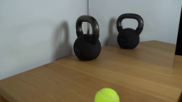
视觉工具实际返回图片 2
视觉工具实际返回图片 3
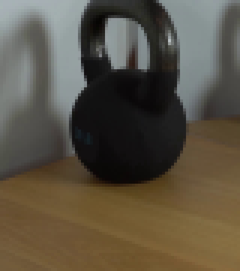
视觉工具实际返回图片 4
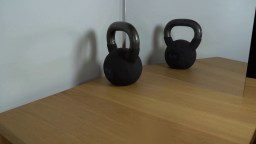
视觉工具实际返回图片 5
视觉工具实际返回图片 6
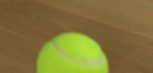
视觉工具实际返回图片 7
视觉工具实际返回图片 8
视觉工具实际返回图片 9
视觉工具实际返回图片 10
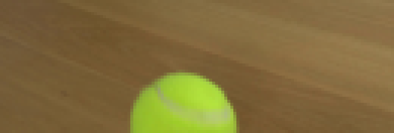
视觉工具实际返回图片 11
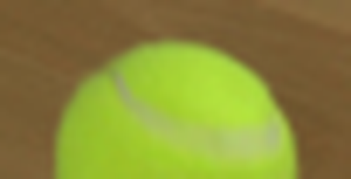
视觉工具实际返回图片 12
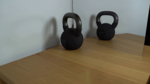
视觉工具实际返回图片 13
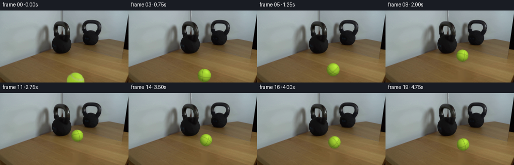
视觉工具实际返回图片 14

视觉工具实际返回图片 15
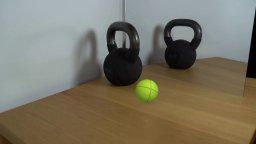
视觉工具实际返回图片 16
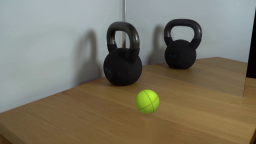
视觉工具实际返回图片 17
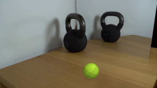
视觉工具实际返回图片 18
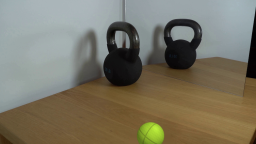
视觉工具实际返回图片 19
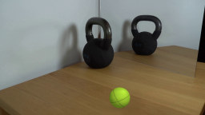
视觉工具实际返回图片 20
视觉工具实际返回图片 21
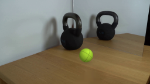
视觉工具实际返回图片 22
视觉工具实际返回图片 23

视觉工具实际返回图片 24
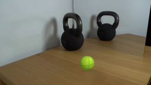
保存候选 4 份；完成命令 40 次；可验证图片返回 24 张。原始 API 响应与完整日志保留在本地。